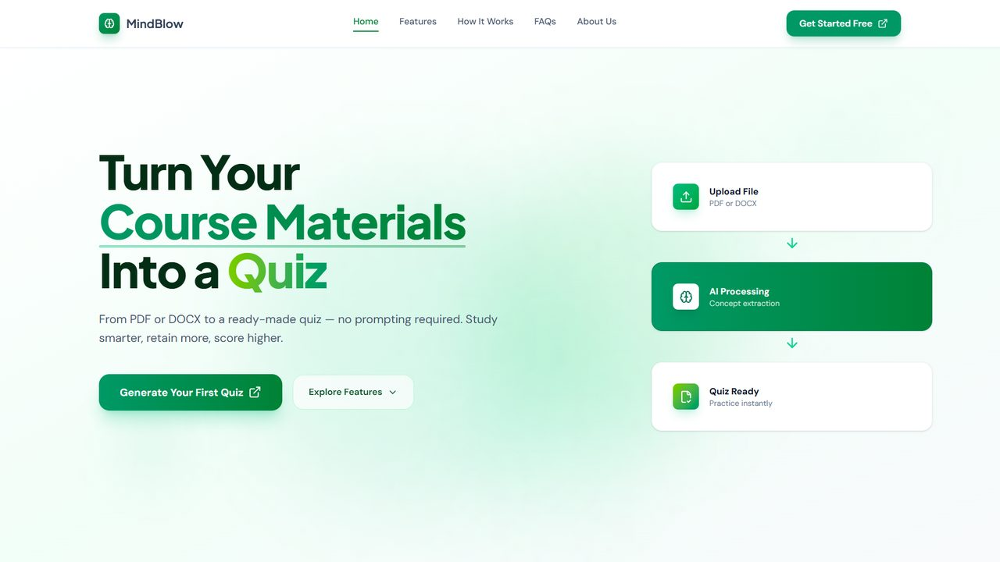
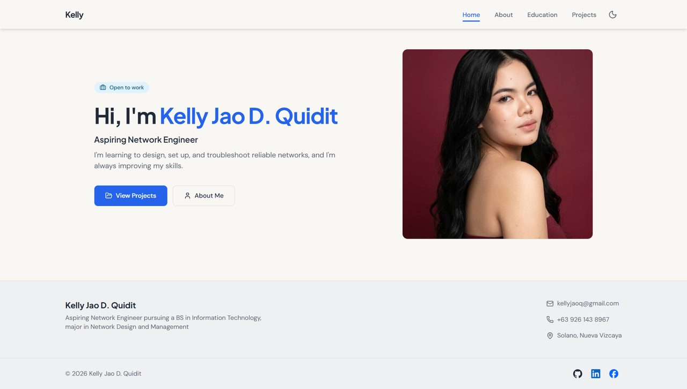

Projects
Academic and personal projects that put my technical skills into practice, with the technologies used in each.
-
-

Academic and personal projects that put my technical skills into practice, with the technologies used in each.

